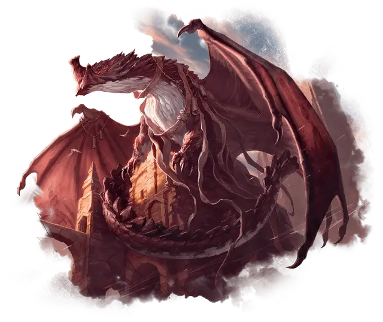

Веломахус Лорхолд
Velomachus Lorehold
Громадный Дракон (Волшебница), законно-нейтральный, именной НИП

Класс Доспеха 21 (природный доспех)
Хиты 487 (25к20 + 225)
Скорость 40 футов, летая 80 футов, лазая 40 футов
| мод | спас | ||
|---|---|---|---|
| СИЛ | 30 | +10 | +10 |
| ЛОВ | 14 | +2 | +10 |
| ТЕЛ | 29 | +9 | +17 |
| мод | спас | ||
|---|---|---|---|
| ИНТ | 30 | +10 | +10 |
| МДР | 20 | +5 | +13 |
| ХАР | 18 | +4 | +12 |
Навыки Восприятие +13, История +18, Магия +18, Расследование +18
Иммунитет к урону звук
Чувства слепое зрение 120 футов, пассивное Восприятие 23
Языки Все
Опасность 25 (75000 опыта)
Бонус мастерства +8
Особенности
Легендарное сопротивление (3/день). Если Веломахус провалит спасбросок, она может вместо этого сделать спасбросок успешным.
Действия
Мультиатака. Веломахус совершает одну атаку Укусом и две атаки Когтями.
Укус. . Рукопашная атака оружием: +18 к попаданию, досягаемость 15 футов, одна цель. Попадание: 15 (1к10 + 10) колющего урона плюс 6 (1к12) урона звуком.
Коготь. . Рукопашная атака оружием: +18 к попаданию, досягаемость 10 футов, одна цель. Попадание: 13 (1к6 + 10) рубящего урона. Если целью является существо Огромного размера или меньше, оно падает ничком.
Дыхание волны сражений (Перезарядка 5-6). Веломахус издает громовой звук в виде 90-футового конуса. Каждое существо в этой области должно совершить спасбросок Телосложения Сл 25. При провале существо получает 45 (7к12) урона силовым полем и 45 (7к12) урона звуком и отбрасывается на 20 футов в горизонтальном направлении по выбору Веломахус. В случае успеха существо получает половину этого урона и не отбрасывается. Предметы, которые не носят или не несут, получают урон и отбрасываются, как если бы они были существами, которые провалили спасбросок.
Использование заклинаний. Веломахус накладывает одно из следующих заклинаний, используя Интеллект в качестве базовой характеристики и без использования материальных компонентов:
• 1/день каждое: связь с иным миром [contact other plane] (накладывается действием, контакт с давно умершим духом), предсказание [divination], движение почвы [move earth], силовая стена [wall of force].
Легендарные действия
Веломахус может совершать 3 легендарных действия, выбирая из указанных ниже вариантов. Лишь одно легендарное действие может быть совершено за раз, и только в конце хода другого существа. Веломахус восстанавливает истраченные действия в начале своего хода.
Коготь. Веломахус совершает одну атаку Когтем.
Хаотичный поток (стоит 2 действия). Веломахус перемещается на половину своей скорости полета. Если существо попадает или промахивается по ней провоцированной атакой во время этого перемещения, атакующий получает 19 (3к12) урона звуком.
Повторение истории (стоит 3 действия). Веломахус волшебным образом призывает 1к4 талисмана–статуи духа [spirit statue mascot] в незанятых пространствах, которые она может видеть в пределах 60 футов. Статуи духов подчиняются её командам и начинают свой ход сразу после нее. Любое существо, кроме статуи духа или Веломахус, становится опутанным, если оно начинает свой ход в пределах 5 футов от одной или нескольких из этих статуй духа. Это опутанное состояние длится до конца хода существа. Эти статуи духов исчезают через 10 минут, когда Веломахус умирает или когда она снова использует это действие.
Описание
Веломахус Лорхолд была первым драконом Стриксхейвена, овладевшая магией порядка и хаоса, потоком и предсказанием событий во времени. Её магия поощряет исследования и открытия через призму создания прямого доступа к прошлому.
Она основала факультет Лорхолд, чтобы смертные никогда не забывали уроки прошлого. Прожив столетия, Веломахус устала наблюдать, как постоянно повторяются одни и те же ошибки. Она надеется, что обучение на её факультете будет способствовать развитию навыков либо прогнозирования будущих ошибок, извлекая уроки из тех, что были раньше, либо формированию гибкого мышления, позволяющего людям эффективно менять свои планы, когда происходит непредвиденное.
Заклинания Веломахус, легендарные действия и оружие дыхания сопровождаются визуальными эффектами, напоминающими тома и свитки, состоящие из золотого света, ощутимых деформаций, когда время ускоряется само по себе и громовых звуков.